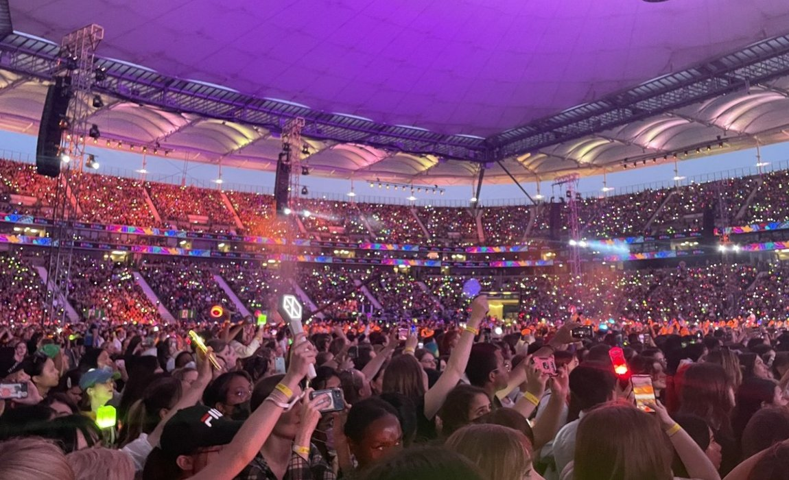

Now many K-pop groups are now enjoying worldwide popularity.
A representative example is BTS, the winner of the US Billboard Awards.
Besides that, there are EXO, IU, etc.
Until the current culture was created, kpop idols were divided by generation.
Among them, the emergence of 2nd generation idols
led to the heyday as it is now.

As one of the pioneers of the Hallyu wave,
2nd generation K-POP groups were
immensely popular thanks to their songs
with catchy hooks and simple point dances.
Back then,
one couldn’t help but love BIGBANG’s electronic beats,
Girls’ Generation’s visuals,
Super Junior’s addictive choreographies,
and TVXQ’s powerful harmonious vocals.